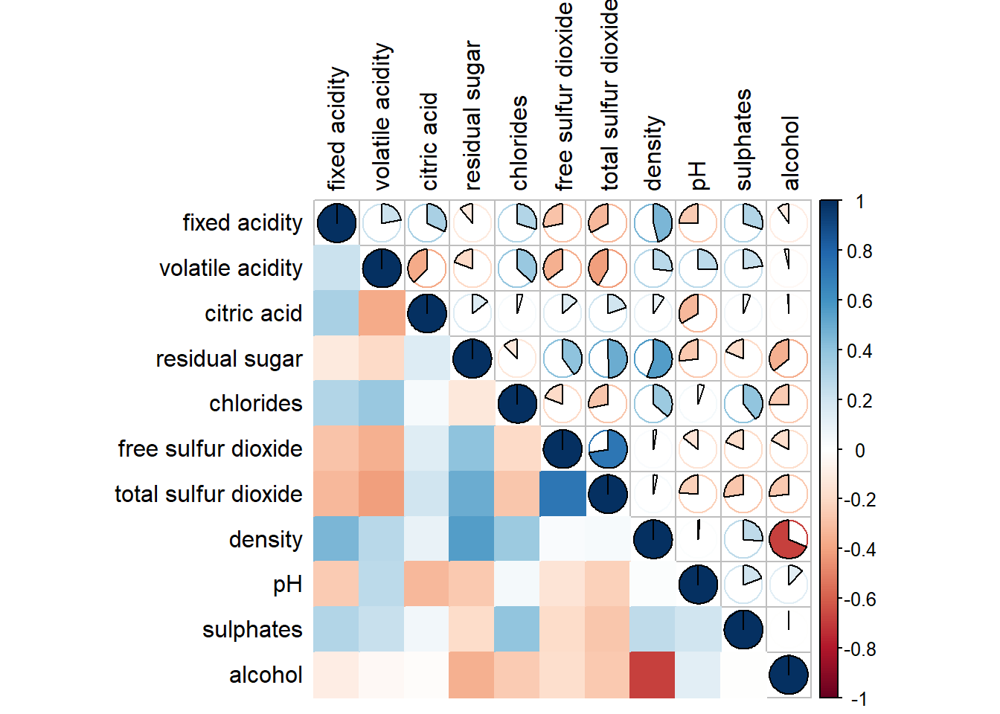

Hands-on Exercise 5b
Visual Multivariate Analysis: Visual Correlation Analysis
1 Visual Correlation Analysis
1.1 Overview
Here I practice the following:
- Creating correlation matrix using pairs() of R Graphics
- Plotting corrgram using corrplot package
1.2 Loading libraries
1.3 Import and prepare data
1.3.1 Importing data
1.4 Building correlation matrix with pairs() method
1.4.1 Basic correlation matrix


1.4.2 Drawing the lower corner
It is common practice to show either upper half or lower half of the correlation matrix instead of both, because a correlation matrix is symmetric.
We can customize this using upper.panel or lower.panel.
1.4.3 Including with correlation coefficients
panel.cor <- function(x, y, digits=2, prefix="", cex.cor) {
usr <- par("usr")
par(usr = c(0, 1, 0, 1))
r <- abs(cor(x, y, use = "complete.obs"))
txt <- format(c(r, 0.123456789), digits = digits)[1]
txt <- paste(prefix, txt, sep = "")
if (missing(cex.cor)) cex.cor <- 0.8 / strwidth(txt)
text(0.5, 0.5, txt, cex = cex.cor * (1 + r) / 2)
}
pairs(wine[,2:5],
upper.panel = panel.cor)1.5 Visualising Correlation Matrix: ggcormat()
There are at least three R packages that provide functions to plot corrgram:
In this section, we will practice visualising correlation matrix by using ggcorrmat() of ggstatsplot package.
1.5.1 Basic plot
ggcorrmat(
data = wine,
cor.vars = 1:11 # used to compute the correlation matrix needed to build the corrgram
)ggcorrmat(
data = wine,
cor.vars = 1:11, # used to compute the correlation matrix needed to build the corrgram
ggcorrplot.args = # provide additional aesthetic arguments
list(outline.color = "black",
hc.order = TRUE,
tl.cex = 10),
title = "Correlogram for wine dataset",
subtitle = "Four pairs are no significant at p < 0.05",
ggplot.component = list(
theme(text=element_text(size=10),
axis.text.x = element_text(size = 8),
axis.text.y = element_text(size = 8)))
)For ggcorrplot.arg, the list should avoid any of the following arguments since they are already internally being used: corr, method, p.mat, sig.level, ggtheme, colors, lab, pch, legend.title, digits.
1.6 Building multiple plots
To plot facet, we need to use grouped_ggcorrmat()
grouped_ggcorrmat(
data = wine,
cor.vars = 1:11,
grouping.var = type,
type = "robust",
p.adjust.method = "holm",
plotgrid.args = list(ncol = 2),
ggcorrplot.args = list(outline.color = "black",
hc.order = TRUE,
tl.cex = 10),
annotation.args = list(
tag_levels = "a",
title = "Correlogram for wine dataset",
subtitle = "The measures are: alcohol, sulphates, fixed acidity, citric acid, chlorides, residual sugar, density, free sulfur dioxide and volatile acidity",
caption = "Dataset: UCI Machine Learning Repository"
)
)
1.7 Visualising Correlation Matrix using corrplot
First, read up on this link.
- about 50 parameters including
method,type,order,diag - color intensity of glyph is proportional to correlation coefficient by default
- The colors of the correlation plots can be customized by
colin corrplot()
1.7.1 Getting started with corrplot
First we compute the correlation matrix of the data frame:
Nex, we plot the corrgram:

Things that can be changed:
- Visualization method (
method) - Layout (
type) - Color scheme (diverging or sequential)
- color choice for positive or negative correlation coefficient
- saturation to represent strength of correlation coeffcient
1.7.2 Working with visual geometrics
Seven visualization methods ‘circle’, ‘square’, ‘ellipse’, ‘number’, ‘shade’, ‘color’, ‘pie’ Vary the visualization method with method argument.
1.7.3 Working with layout
- use
typeargument to vary layout: “full”, “upper” or “lower”
1.7.4 Working with mixed layout
corrplot.mixed(): Set visual methods of lower and upper triangular separately
corrplot.mixed(wine.cor,
lower = "color",
upper = "pie", # circles are filled clockwise for positive values, anti-clockwise for negative values
tl.pos = "lt", # “d”, “lt”, “n” text label in diagonal, lt is left and top, n is none
diag = "u", # “n”, “l”, “u” none, lower or upper
tl.col = "black")
1.7.5 Combining corrgram with the significant test
p.matis the p-value matrix.- We can get p-value matrix and confidence intervals matrix by
cor.mtest()which returns a list containing:pis the p-values matrix,lowCIis the lower bound of confidence interval matrix.uppCIis the lower bound of confidence interval matrix.
Then use p.mat argument:

1.7.6 Reorder a corrgram
We can re-order the matrix according to correlation coefficients using order argument.
- “AOE” is for the angular order of the eigenvectors. See Michael Friendly (2002) for details.
- “FPC” for the first principal component order.
- “hclust” for hierarchical clustering order, and “hclust.method” for the agglomeration method to be used.
- “hclust.method” should be one of “ward”, “single”, “complete”, “average”, “mcquitty”, “median” or “centroid”.
- “alphabet” for alphabetical order.
More algorithms can be found in seriation package.
1.7.7 Reorder a corrgram using hclust()
If using hclust, corrplot() can draw rectangles around the corrgram based on the results of hierarchical clustering.
'hclust.method'should be one of'ward','ward.D','ward.D2','single','complete','average','mcquitty','median'or'centroid'.